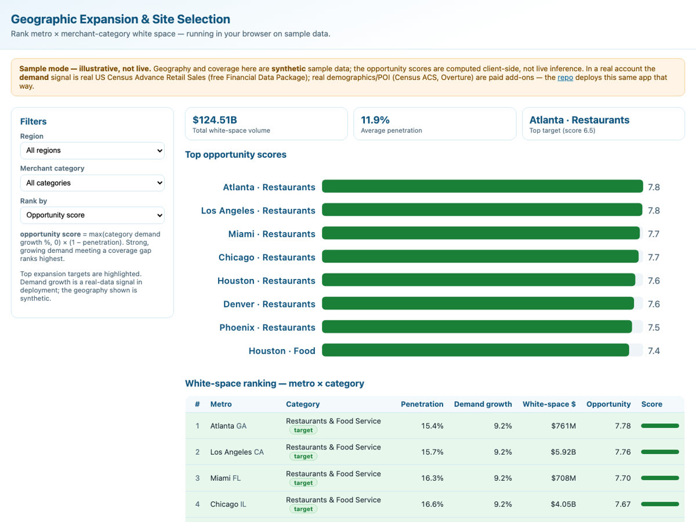
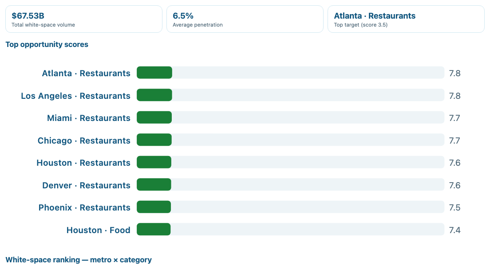

01 / See
A ranked metro × category table — penetration, white-space dollars, demand growth, and a computed opportunity score — with the top expansion targets highlighted and a one-page verified note per run.
SNOW PACK · FINANCIAL SERVICES · PAYMENTS
A payments processor decides where to grow next: an app ranks every metro × merchant-category cell by white-space opportunity — where category demand is strong but your merchant coverage is still thin — grounded in governed data, with a verifier that refuses an unsupported claim — with a Cortex Agent you can explore in Snowsight.
Synthetic geography and coverage. Real US Census demand is a free Marketplace add-on; the browser Try page is an illustrative, client-side preview, not live inference.
Every acquirer knows its current book. The hard question is the white space: which metros and verticals are growing fast where you’ve barely penetrated? This pack ranks every metro × merchant-category cell by opportunity — real category demand meeting your coverage gap — and writes the expansion note from governed data only, with a verification step that catches anything unsupported. The difference between a hunch and a target an expansion committee will sign off.
A ranked metro × category table — penetration, white-space dollars, demand growth, and a computed opportunity score — with the top expansion targets highlighted and a one-page verified note per run.
Explore in your browser on synthetic data — no account, no install. Or run one SQL script in your own account to build it all on fully synthetic tables.
Mount the free Financial Data Package from the Marketplace, run setup.sql, and the same app ranks real US Census category demand against your coverage. Adapt to your settlement data with Cortex Code.


max(category demand growth %, 0) × (1 − penetration): strong demand meeting a coverage gap ranks highest.This is a hybrid pack, and it says so honestly. The demand signal is real: US Census Advance Retail Sales by category, free on the Snowflake Marketplace. The geography and coverage — metros, population, income, and this processor’s penetration — are synthetic, because there is no free demographics or POI source in-account. Real demographics (Census ACS) and points of interest (Overture) are paid Marketplace add-ons; the pack is built so you swap them in with no change downstream.